squarepack gallery
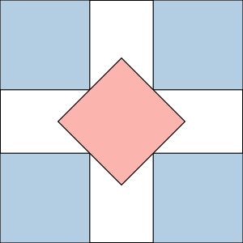
n=5, s=2.707107 (gobel_strip); best known 2.707107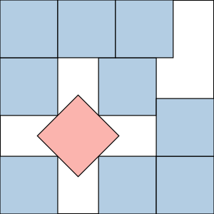
n=10, s=3.707107 (gobel_strip+L); best known 3.707107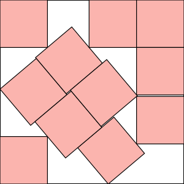
n=11, s=3.877090 (numeric:bisect:drop); best known 3.877084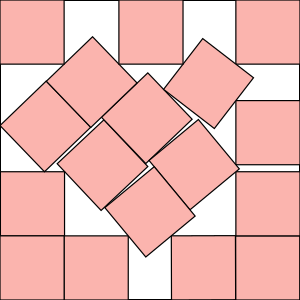
n=17, s=4.678228 (numeric:bisect:random); best known 4.675530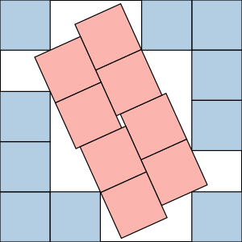
n=18, s=4.822876 (sqrt7); best known 4.822876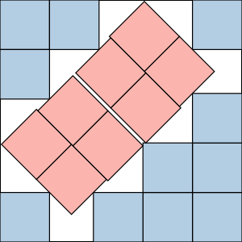
n=19, s=4.885618 (wainwright); best known 4.885618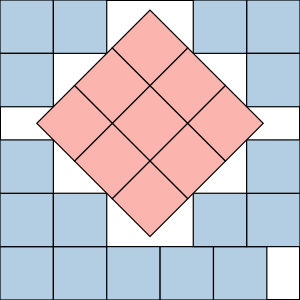
n=26, s=5.621320 (tilted_block); best known 5.621320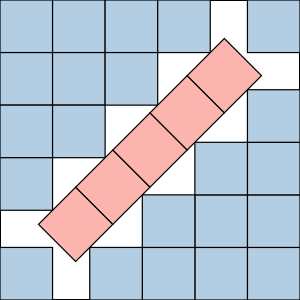
n=27, s=5.707107 (gobel_strip); best known 5.707107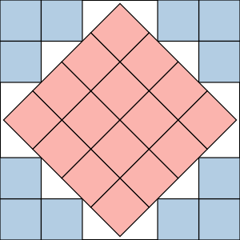
n=28, s=5.828427 (gobel_square); best known 5.824445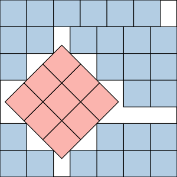
n=37, s=6.621320 (tilted_block); best known 6.598620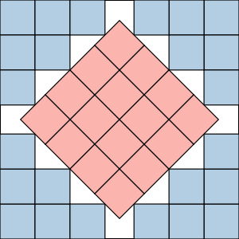
n=40, s=6.828427 (gobel_square); best known 6.828427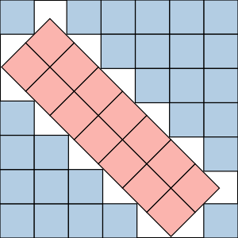
n=41, s=6.949747 (tilted_block); best known 6.926693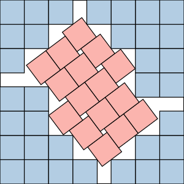
n=50, s=7.571429 (schadt); best known 7.571429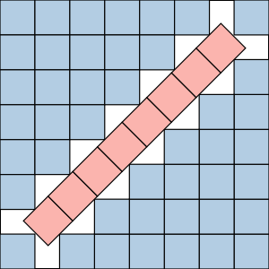
n=52, s=7.707107 (gobel_strip); best known 7.707107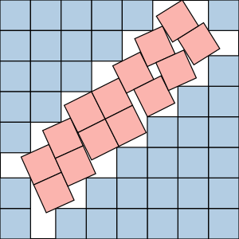
n=53, s=7.822876 (sqrt7); best known 7.822876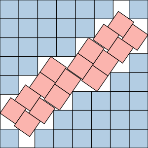
n=54, s=7.846667 (devincentis); best known 7.846667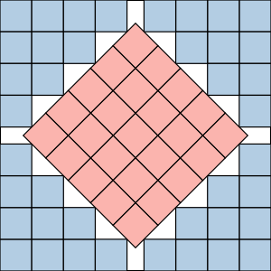
n=65, s=8.535534 (gobel_square); best known 8.535534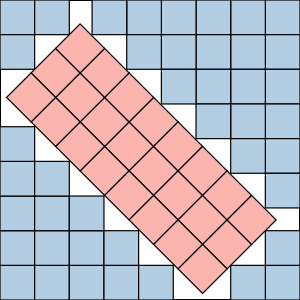
n=66, s=8.656854 (tilted_block); best known 8.656854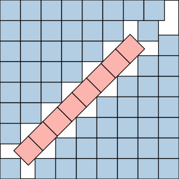
n=67, s=8.707107 (gobel_strip+L); best known 8.707107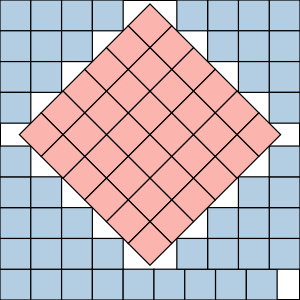
n=85, s=9.742641 (tilted_block); best known 9.742641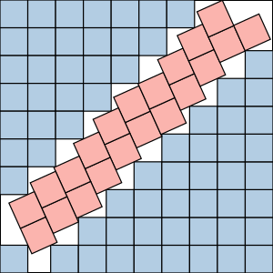
n=86, s=9.822876 (sqrt7); best known 9.822876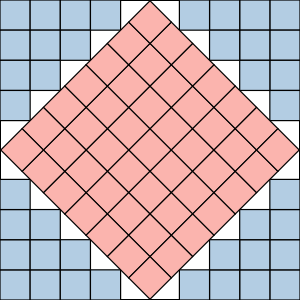
n=89, s=9.949747 (gobel_square); best known 9.949747